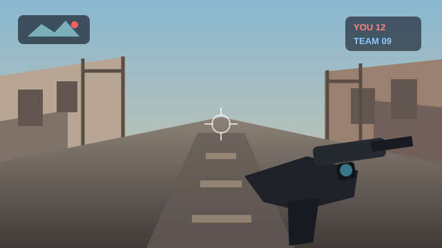
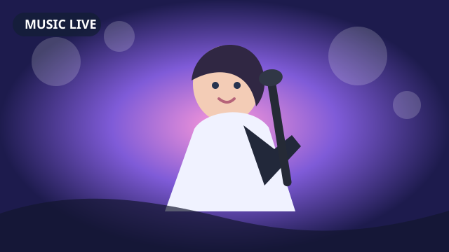
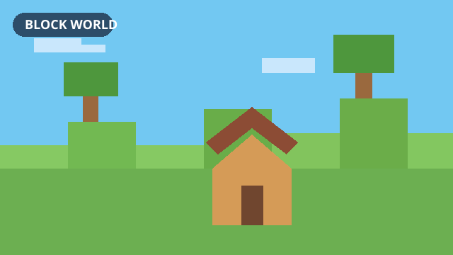

TTwitchメイン•••
LIVE
ゲーム配信お気に入りの配信を同時にチェック
🔊100%コメント

Multi Live / Video Viewer
好きな配信や動画を自由に並べて、まとめて視聴。ブラウザを何枚も開かず、見たい配信をすっきり見やすく楽しめます。



見たい配信を追加したら、あとはLiveDeckの中で並べて調整。サービスごとのブラウザ画面を行き来する手間を減らします。
複数の配信や動画を1つのウィンドウに配置。ゲーム、歌、雑談など、同時に追いたい配信をひと目で見渡せます。
自動配置に加えて、見たい枠数や画面の使い方に合わせてレイアウトを選択。必要なら配信枠を分離して使うこともできます。
よく見る配信先を保存して、次回すぐに開けます。サービスをまたいだお気に入りや最近見た配信もまとめて扱えます。
Webページの表示倍率や音量を配信枠ごとに調整。小さい枠でも見たい部分を読みやすくしたり、聞きたい配信だけ音を残したりできます。
対応する配信ではコメント表示を補助。配信画面を見ながら、必要なコメント周りの操作へすぐ移れます。
対応サービスではLiveDeck上部の検索から目的の配信へ。枠ごとにサービスを選び、別の配信へ切り替えられます。
普段の配信視聴を大きく変えず、ブラウザで開いていたページをLiveDeckの枠にまとめる感覚で使えます。
見たいサービスを選んで配信を開きます。
自動レイアウトや表示倍率で画面を整えます。
よく見る配信先は次回すぐ開けるよう保存できます。
サービスごとに検索方法やWeb画面の仕様は異なりますが、LiveDeckでは配信枠としてまとめて表示できます。
各サービスの名称・商標は各権利者に帰属します。LiveDeckは各サービスの公式アプリではありません。